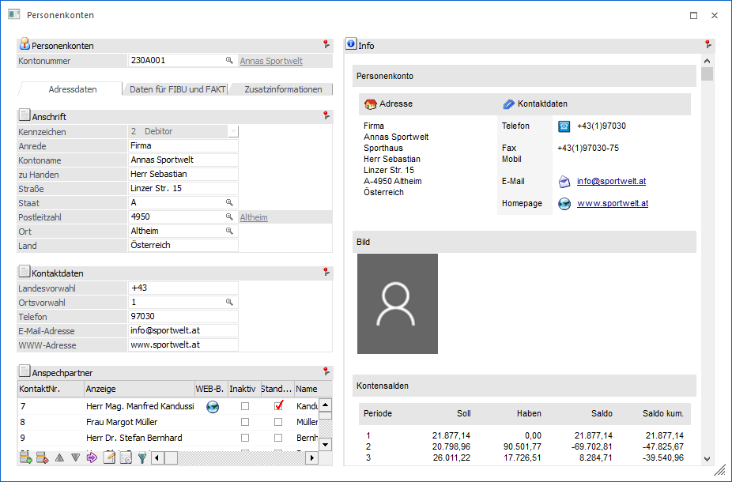
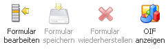
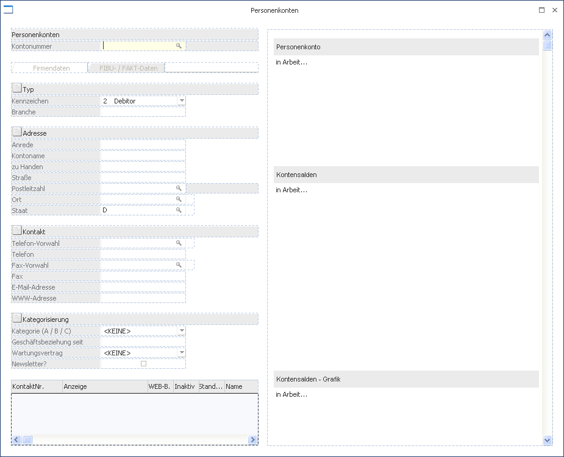
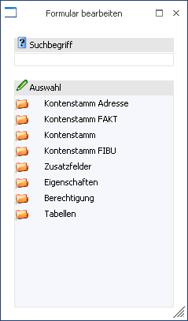
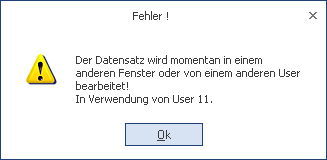
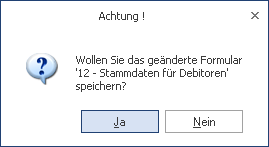

Wenn mit Vorlagen der Art "Individuelles Formular" gearbeitet wird, so gibt es standardmäßig mehrere Möglichkeiten Formulare zu wechseln bzw. zu bearbeiten:
Ø Formular
Über die Auswahlbox "Formular" kann gewählt werden, in welcher Form der Stammdatensatz bearbeitet werden soll. Wenn die Option "0 - Allgemein" gewählt wird, dann wird wieder in die "Normalansicht" mit allen Eingabefeldern zurückgeschalten.
Hinweis
Die Definition der Formulare für die individuelle Gestaltung erfolgt im Programm WinLine START über den Menüpunkt "Vorlagen - Vorlagen Anlage - Individuelle Formulare". Das Ergebnis davon könnte z.B. so aussehen:

Individuelle Formulare bearbeiten (Drag & Drop)
In den individuellen Formularen für Personenkonten, Sachkonten, Interessenten, Artikeln, Kontakten und CRM gibt es rechts neben der Formularauswahl 4 Buttons zur direkten Formularbearbeitung:
Buttons

Ø Formular bearbeiten
Mit diesem Button wird der Bearbeitungsmodus aktiviert.
Hinweis
Wenn der Benutzer keine Berechtigung fürs Bearbeiten der Vorlage hat, erscheint eine entsprechende Meldung beim Klick auf den Button.
Ø Formular speichern
Wird der Button aktiviert, so wird die Vorlage gespeichert. Dieses ist nur möglich, wenn die Vorlage zuvor bearbeiten wurde.
Ø Formular wiederherstellen
Wird der Button aktiviert, so wird die geänderte und noch nicht gespeicherte Vorlage wiederhergestellt.
Ø OIF anzeigen
Hiermit können zusätzliche Informationen zum aktuellen Stammdatensatz / CRM-Eintrag angezeigt werden.
Hinweis
Die Einstellung des Buttons (ob das OIF angezeigt werden soll oder nicht) wird nicht gespeichert!
Achtung
Der Button steht generell nur zur Verfügung, wenn die Option "OIF anzeigen" in der Vorlagendefinition aktiviert wurde.
Im Gegensatz zu den anderen Buttons in den Stammdaten-Formularen können diese Buttons auch angeklickt werden, wenn noch kein Key (z.B. Kontonummer, Artikelnummer…) eingegeben wurde.
Wird der Button "Formular bearbeiten" geklickt, wird in den "Formular-bearbeiten-Modus" gewechselt. In diesem Modus können keine Stammdaten erfasst oder geändert werden. Stattdessen können die einzelnen Felder mit "Drag & Drop" verschoben werden.

Zusätzlich wird das Fenster "Formular bearbeiten" geöffnet, in dem (so wie in der "Vorlagen Anlage") die noch verfügbaren Felder angezeigt werden. Hier können jetzt Felder aus der Vorlage entfernt oder weitere Felder zum Formular hinzugefügt werden. Edit-Felder und Tabellen können verschoben werden, alle anderen Felder im Fenster (Buttons, Register, Überschriften, Grafik, ...) jedoch nicht.
Folgende Feldtypen stehen im Fenster "Formular bearbeiten" zur Verfügung:
ü Stammdaten-Felder
ü Zusatzfelder
ü Eigenschaften
ü Berechtigung und Tabellen

Bei Stammdaten-Vorlagen kann das "Hauptfeld" (z.B. Personenkontonummer) nicht verschoben werden. Dieses muss immer an der ersten Stelle im Formular stehen. Ebenso kann das letzte vorhandene Feld in einem Register bzw. unter einer Überschrift nicht verschoben werden. Es muss immer mindestens ein Feld in einem Register oder einer Überschrift vorhanden sein.
Beim Verschieben von Feldern innerhalb des Fensters kann nur ein bestehendes Element (d.h. Editfeld oder Tabelle) verschoben werden. Das "Hauptfeld" (bei Stammdaten), Überschriften sowie andere Elemente im Fenster (wie z.B. die Grafik oder das Info-Formular) können nicht verschoben werden.
Mehrzeilige Objekte können vertauscht, aber nicht auf ein anderes Editfeld gezogen werden. Ebenso können Editfelder nicht auf ein Notizfeld oder eine Tabelle verschoben werden.
Beim Einfügen eines neuen Feldes wird eine Reihe von Prüfungen durchgeführt. Wenn bereits 200 Felder im Formular vorhanden sind, können keine weiteren Felder eingefügt werden. Ein neues Feld kann auf ein bestehendes Edit-Feld fallen gelassen werden und nimmt dann dessen Position ein. Es ist aber auch das fallen lassen irgendwo im Fenster möglich. In diesem Fall wird das neue Feld am Ende des Registers angehängt. Auch hier kann nicht auf das Key-Feld (Stammdaten), auf Überschriften oder auf andere Elemente im Fenster (Grafik, Info-Formular) verschoben werden. Wird ein Notizfeld oder eine Tabelle auf ein vorhandenes Edit-Feld fallen gelassen, wird dieses vor der ersten vorhandenen Tabelle bzw. dem ersten Notizfeld eingefügt oder am Ende des Registers eingefügt. Ebenso wird ein Editfeld vor der ersten Tabelle bzw. dem ersten Notizfeld eingefügt, wenn es auf eines dieser Elemente gezogen wird.
Es ist auch möglich, Editfelder, Notizfelder und Tabellen aus dem Fenster zu entfernen, indem sie in das Fenster "Formular bearbeiten" verschoben werden. Auch hier kann das "Hauptfeld" (Stammdaten) nicht entfernt werden. Auch ein Entfernen von Pflichtfeldern aus der Vorlage ist nicht möglich.
In das Info-Formular für CRM-Vorlagen können keine neuen Felder eingefügt auch nicht verschoben werden.
Wenn der Button "Formular bearbeiten" angeklickt worden ist, wird zuerst geprüft, ob das Fenster "Formular bearbeiten" in derselben oder einer anderen Applikation bereits geöffnet ist. In diesem Fall erfolgt ein Warnhinweis.

Wenn das Formular mit dem "Vorschau"- Button in der Vorlagen-Anlage geöffnet wurde, ist das Bearbeiten nicht möglich. Beim erstmaligen Bearbeiten eines Formulars wird ein mandantenübergreifender Lock gesetzt. Dieser bleibt erhalten, bis die Änderungen an der Vorlage gespeichert oder verworfen wurden. In der Zeit kann kein weiterer Benutzer das Formular in der Vorlagen-Anlage oder mit "Formular bearbeiten" verändern.
Beim Umschalten auf den "Bearbeiten"-Modus werden die Buttons (mit Ausnahme des Ende-Button und des "Formular bearbeiten/speichern/zurücksetzen"-Buttons) gegraut. Wenn es sich um ein Formular mit mehreren Registern handelt, werden auch die Register-Buttons gegraut, da ein Umschalten des Registers in diesem Bearbeitungsstatus nicht möglich ist. Die Register eines Formulars müssen einzeln bearbeitet werden. Bei einem erneuten Klicken des Buttons "Formular bearbeiten" wird wieder in den Editier-Modus gewechselt und die Änderungen an der Vorlage bleiben erhalten. Wurden die Änderungen am Formular bisher noch nicht gespeichert, können jetzt (wie auch schon während des Bearbeitens) mittels Buttons die Änderungen gespeichert oder verworfen werden.
Bei einem Wechsel des Formulars bzw. beim Schließen des Fensters wird gefragt, ob die Änderungen gespeichert werden sollen, andernfalls werden die Änderungen verworfen.

Wird ein Individuelles Formular geöffnet, während ein anderes Formular desselben Typs bereits geöffnet ist und bearbeitet wird bzw. bearbeitet wurde, wird das neue Formular geöffnet, die zuvor durchgeführten Änderungen werden verworfen.